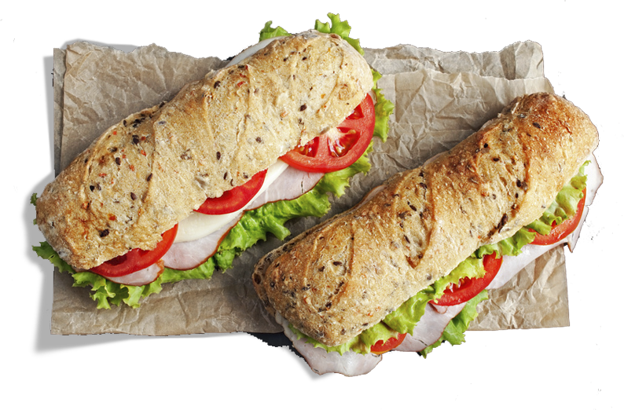

<!--DEV

Для использования этого файла как шаблона:

@ @include('blocks/main-slider/main-slider.html')

(Нужно убрать пробел между символами @)
Подробнее: https://www.npmjs.com/package/gulp-file-include

-->

<div class="main-slider">
  <div class="main-slider__wrap">
    <div class="main-slider__item">
      <div class="main-slider__col main-slider__col--left">
        <div class="main-slider__image">
          
        </div>
        <div class="main-slider__recipe">
          <ul>
            <li>Половину багета смазать сливочным маслом</li>
            <li>Выложить на нее листья, ломтики ветчины и сыра</li>
            <li>Выложить сверху порезанный кружочками помидор</li>
            <li>Накрыть другой половинкой багета</li>
          </ul>
          <p>Багет с ветчиной "Рузком", помидорами и сыром готов!</p>
        </div>
      </div>
      <div class="main-slider__col main-slider__col--right">
        <h2 class="main-slider__title">Багет с ветчиной, помидорами и сыром</h2>
        <div class="ingredients">
            <h4 class="ingredients__title">Ингридиенты</h4>
            <ul class="ingredients__list">
              <li class="ingredients__item">
                <span class="ingredients__item-name">Багет</span>
                <span class="ingredients__item-dots"></span>
                <span class="ingredients__item-qt">1 шт.</span>
              </li>
              <li class="ingredients__item">
                <span class="ingredients__item-name">Сливочное масло</span>
                <span class="ingredients__item-dots"></span>
                <span class="ingredients__item-qt">25 г</span>
              </li>
              <li class="ingredients__item">
                <span class="ingredients__item-name">Ветчина "<span class="color">Рузком</span>"</span>
                <span class="ingredients__item-dots"></span>
                <span class="ingredients__item-qt">2 ломтика</span>
              </li>
              <li class="ingredients__item">
                <span class="ingredients__item-name">Сыр</span>
                <span class="ingredients__item-dots"></span>
                <span class="ingredients__item-qt">1 ломтик</span>
              </li>
              <li class="ingredients__item">
                <span class="ingredients__item-name">Помидор</span>
                <span class="ingredients__item-dots"></span>
                <span class="ingredients__item-qt">1/2 шт.</span>
              </li>
              <li class="ingredients__item">
                <span class="ingredients__item-name">Листья салата</span>
                <span class="ingredients__item-dots"></span>
                <span class="ingredients__item-qt">2 шт.</span>
              </li>

            </ul>
        </div>
      </div>
    </div>
  </div>
</div>
